A predictive AI model for soccer shot success
My senior year of high school, I had an ACL injury. Knowing that I needed to prepare for my upcoming college season, I wanted to find a way to continue to improve my soccer abilities while being unable to play. I settled on designing an AI model to predict soccer shot success so that I could validate and learn more about what parameters affect soccer shot success.
I was mentored by Hana Galijasevic, a teaching fellow at my high school. She helped me write and modify the majority of the code for this project.
I chose to collect binary tabular data, meaning that I split my data set into multiple columns, with the majority of the columns being parameters that affect the outcome of a single, binary column. My single binary column was shot success, which could have had either a yes value for a goal or a no value for a missed shot. For my other columns, I gathered situational data that I, based on my prior experiences with soccer, knew would affect the shot’s success. Examples of situational data that I gathered were shot speed, player location at the time of the shot, goalkeeper location at the time of the shot, and location of the shot on the goal frame. After reviewing film, I built a data set of 162 instances.
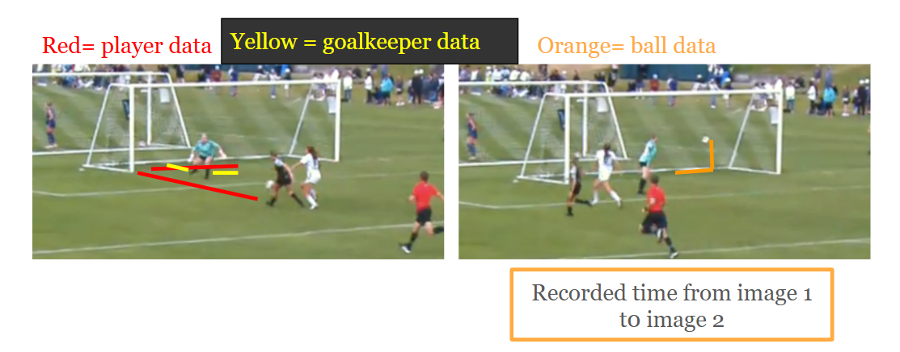
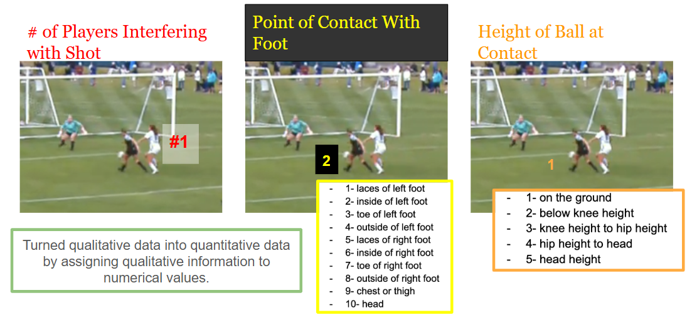
I then created data visuals in Python based on each parameter to determine which features have the highest correspondence to soccer shot success. This process allowed me to eliminate parameters that showed no direct correlation to shot success from the AI model's training data set, making it easier for the model to make accurate predictions. I used Google Colab as my coding platform and decided to represent my data in color-coded scatter plots as they best illustrated the correlations between parameters and shot success.
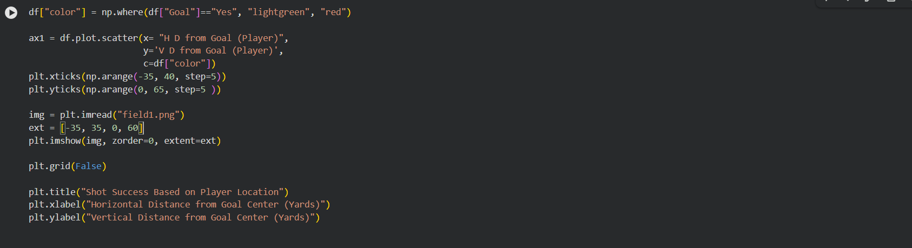
After creating the following scatter plots, I decided to eliminate ball height and shot location on goal frame from the set of parameters used to train the AI model, as their scatter plots indicated no direct correlation between these parameters and shot success. I also eliminated goalkeeper location data from the parameters, as, based on my soccer knowledge, the true inidcator of a shot's success is the goalkeeper's position relative to the location of the shot on frame.
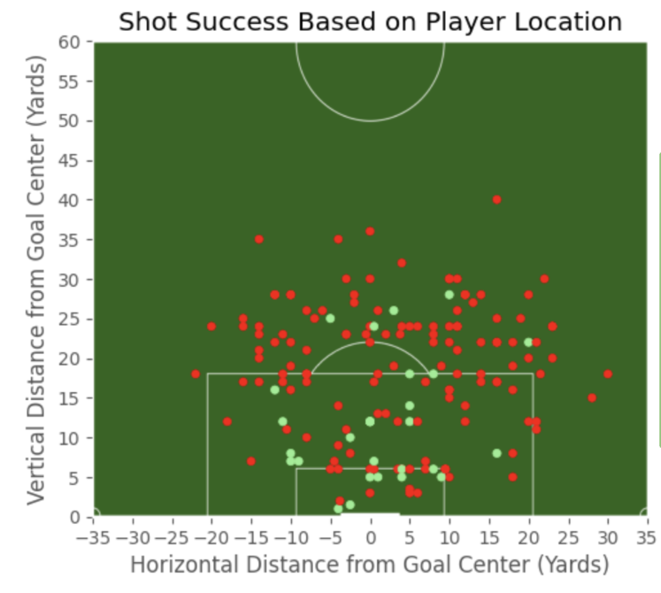
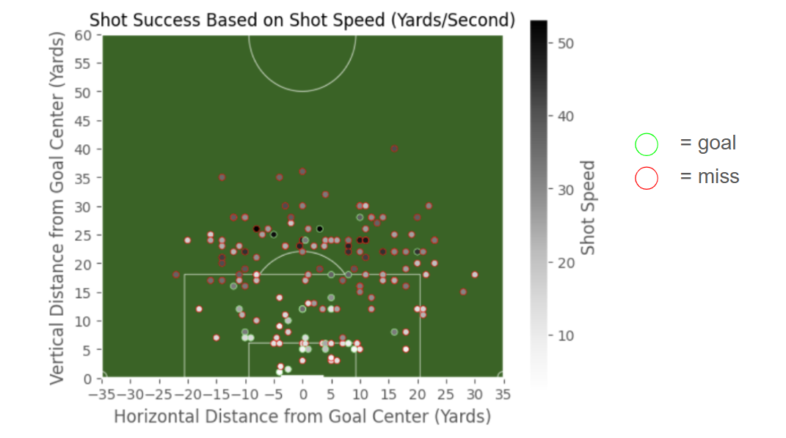
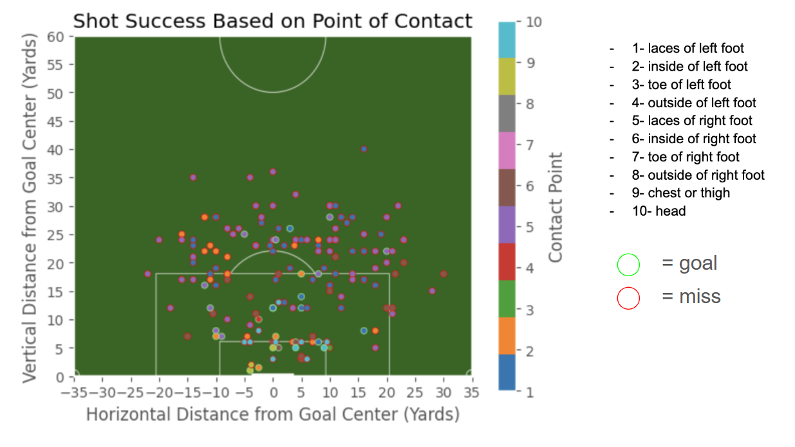
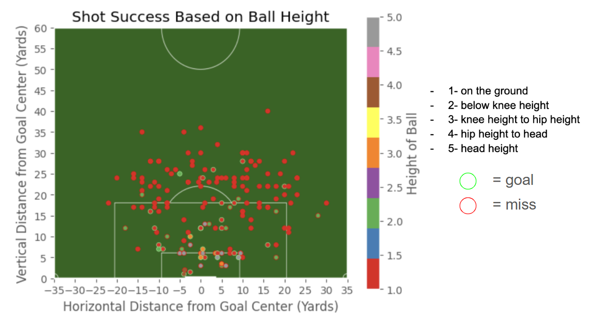
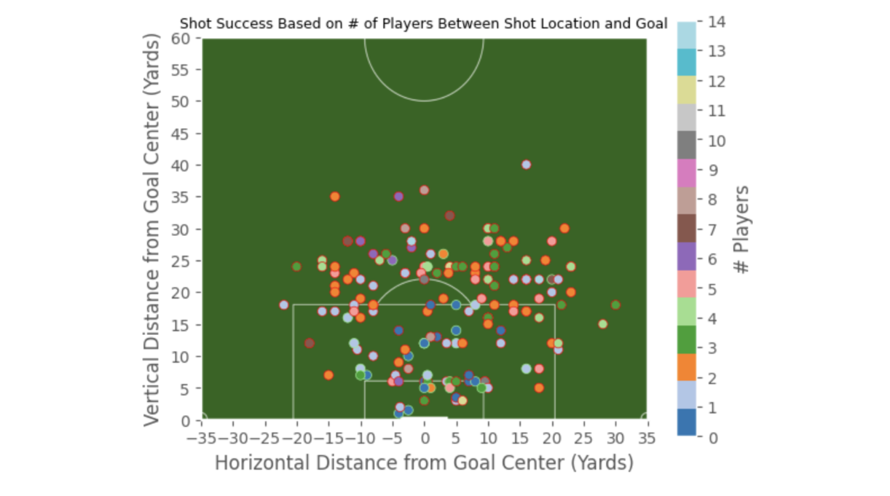
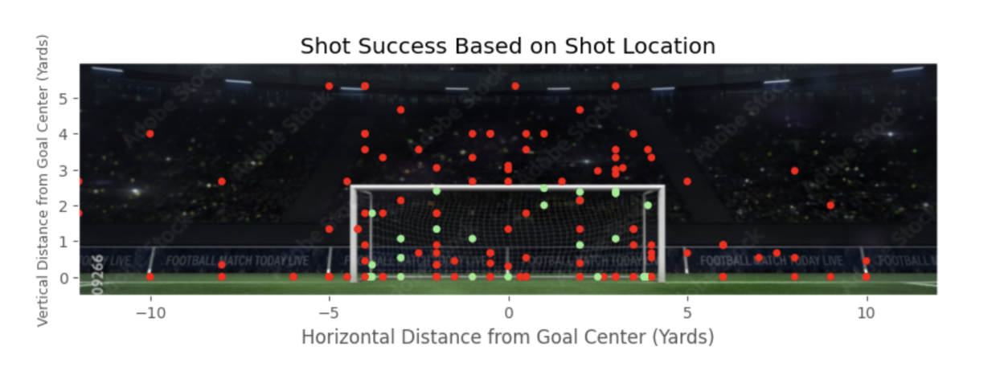
Since I used sklearn to train the AI model, I then converted the dataset's "predicted column" into a NumPy array, removed parameters, and converted the array to a dictionary as I was training the model with multiple features. I then split the dataset into a training and testing set, with 20% of the data being given to the testing set.
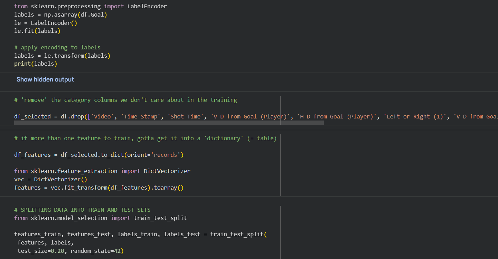
I then trained a RandomForestClassifier with the dataset. After the model tested itself, it determined that it should have an accuracy of rouhgly 88%.
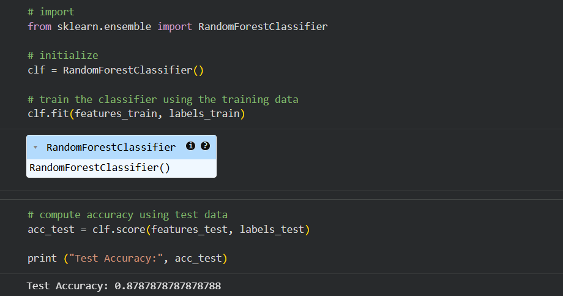
I tested the model by feeding it inputs that should have yielded "Yes" (the shot was successful) or "No" (the shot was unsuccesful). I fed it four test cases, and it only predicted two correctly (50% accuracy), indicating that there are likely flaws within the model. However, four test cases is a very small number, and with more test cases, the model's accuracy could increase.